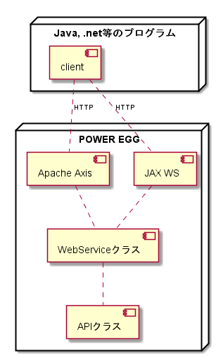

11. XML Webサービス¶
POWER EGG3.0はJava言語で開発されていますので、Javaで開発されている システムとは容易に連携可能ですが .NET等の他の言語で開発されたシステム との連携はこれまで困難でした。
そこで .NETベースのシステムとの連携を容易なものとするため、 一部のAPIがXML Webサービスとして利用できるようになっています。
また、POWER EGG3.0からREST型のWebサービスも提供しており、今後は REST型のWebサービスを拡充していく方針ですので、新規に連携機能を 開発される場合は、REST型のWebサービスを利用されることをお勧めします。

11.1. ワークフローWebサービス¶
POWER EGGでは、ワークフローの一部のAPIがWebサービスとして 利用可能になっています。(POWER EGG V1互換Webサービス)
また、Ver2.3から申請受付番号を戻り値とする新しいWebサービス が利用可能です。
Ver2.3以降は新しいWebサービスを利用することを推奨します。(POWER EGG V2 Webサービス)
11.1.1. ワークフローWebサービスの利用方法¶
ワークフローWebサービスのWSDLは http://<powereggサーバー>/pe4j/services/DataFlowService?wsdl のURLで取得できます。 また、Ver2.3から追加されているWebサービスのWSDLは http://<powereggサーバー>/pe4j/webservice/DataFlowWS?wsdl のURLで取得できます。
Visual Studio.NETなどでWebサービスを利用する場合は、 Web参照として上記のURLを指定することでWebサービスが利用できるようになります。
11.1.2. ワークフローWebサービスの機能(POWER EGG V1互換Webサービス)¶
ワークフローWebサービスでは以下の機能が提供されています。 引数などの詳細については、APIリファレンスを参照してください。
11.1.2.1. XML文書のワークフロー申請（applyWithXML）¶
DataFlowEngineEJB#applyメソッドをWebサービス経由で利用するAPIです。 起案内容の申請本文としてxmlデータを、添付ファイルとして複数のバイト列を受け取り、 ワークフローを開始します。
申請者や申請元部門はPOWEREGGの外部コードを指定するという点がEJBのAPIと 異なっています。 POWEREGG内部コードへの変換はWebサービス内で行われます。
11.1.2.2. バイナリ文書のワークフロー申請（applyWithBinary）¶
applyWithXMLではxmlデータを申請本文として受け取りますが、 このAPIでは、PDFファイルなどのバイナリデータを申請本文として受け取ります。
POWER EGGのワークフローエンジンでは申請本文はXMLファイルでなくて はならないためこのAPIを利用するには、バイナリデータに対応する申請XMLを 生成するためのJavaクラスも開発し事前にPOWER EGGに組み込んでおく必要があります。
XML生成クラスは net.poweregg.web.engine.dataflow.webservice.IntXMLGeneration インターフェースを実装したクラスとして開発します。
開発したXML生成クラスは、WebアプリケーションのCLASSPATHに登録し、 ZT2_CLASSテーブルにレコードを登録することによりPOWER EGGに組み込みます。
ワークフローWebサービスは、バイナリデータ申請が呼び出されたとき、 このレコードを読み込み、XML生成クラスのメソッドを呼び出して申請XMLを生成します。
列名 |
設定内容 |
|---|---|
CORPID |
'0000000000' |
COMMONNO |
'1206' |
CLASSNO |
開発したXML生成クラスが対応する「申請様式」の様式コード |
CLASSNAME |
開発したXML生成クラスのクラス名 |
NUMDATA1 |
Null |
NUMDATA2 |
Null |
NUMDATA3 |
Null |
CHARDATA1 |
開発したXML生成クラスのクラス名 |
CHARDATA2 |
Null |
CHARDATA3 |
Null |
MODCLASS |
'0' |
11.1.2.3. 文書識別情報の登録¶
Webサービスを利用して申請する場合、申請時のパラメタで指定する 文書識別コード(docClassOfMailXml)に該当するデータを QT2_DOCUMENT_CLASSテーブルに登録しておく必要があります。
この文書識別コードは、次に述べるスタイルシート情報との関連づけに利用されます。
列名 |
設定内容 |
|---|---|
DOCCLASSID |
900以降の任意の数値 |
DOCIDNAME |
文書識別コードの名称 |
CLIPFLAG |
0固定 |
USAGEFLAG |
0固定 |
DOCSTORAGEFORMAT |
2固定 |
SYSTEMFLAG |
1固定 |
REGFLAG |
0固定 |
FILEEXTENTION |
'xml'固定 |
MODDATE |
null |
MODEMPNO |
null |
DELETEFLAG |
'0'固定 |
11.1.2.4. スタイルシート(XSL)の指定¶
ワークフローデータは審議・決裁画面に表示されるとき、 XSLファイルによってHTMLに変換されます。
このとき利用されるXSLファイルをZT2_CLASSに登録する必要があります。
XSLデータは、PEWEBインストールディレクトリのappLib\XSLフォルダにファイルとして配置します。
列名 |
設定内容 |
|---|---|
CORPID |
'0000000000' |
COMMONNO |
'1211' |
CLASSNO |
申請XMLの文書識別番号(QT2_DOCUMENT_CLASSに登録したコード） |
CLASSNAME |
任意の文字列 |
NUMDATA1 |
Null |
NUMDATA2 |
Null |
NUMDATA3 |
Null |
CHARDATA1 |
XSLファイル名 |
CHARDATA2 |
Null |
CHARDATA3 |
Null |
MODCLASS |
'0' |
11.1.2.5. 案件情報取得（getApplicationForm）¶
申請案件に関する情報を取得するためのAPIです。
このAPIはDataFlowEngineEJB#getApplicationFormをWebサービス経由で呼び出すAPIです。
11.1.2.6. 決裁済み案件の強制否認・差し戻し（rejectAfterFlowByCode）¶
一旦決裁された申請案件を強制的に否認・差し戻しするためのAPIです。
DataFlowEngineEJB#rejectAfterFlowByCodeに該当します。
11.1.2.7. ワークフロー文書内容の差替え（replaceMainBinarys, replaceMainXML）¶
一旦申請した申請書の内容を差替えるためのAPIです。
11.1.2.8. 決裁ルート情報取得（GetRouteList）¶
申請した申請書のワークフロールート情報を取得します。
11.1.2.9. 決裁状況の取得（GetStatus）¶
申請書の決裁状況を取得します。
11.1.2.10. コメントの登録（RegisterComment）¶
申請書にコメントを登録します。
11.1.2.11. コメント内容の取得（GetCommentTree）¶
申請書に付けられているコメントの情報を取得します。
11.1.3. ワークフローWebサービスの機能(POWER EGG V2 Webサービス)¶
POWER EGG V2ワークフローWebサービスでは以下の機能が提供されています。 引数などの詳細については、APIリファレンスを参照してください。
11.1.3.1. 申請（apply）¶
DataFlowService#applyメソッドをWebサービス経由で利用するAPIです。
起案内容の申請本文としてxmlデータ及びスタイルシートファイル名を、 添付ファイルとして複数のバイト列を受け取り、ワークフローを開始します。
申請者や申請元部門はPOWEREGGの外部コードを指定するという点がEJBのAPIと異なっています。
POWEREGG内部コードへの変換はWebサービス内で行われます。 申請が成功した場合は申請受付番号が返却されます。
11.1.3.3. 取下げ（withdraw）¶
申請中の案件を取り下げます。
11.2. スケジュールWebサービス¶
スケジュール登録、更新、削除を行うWebサービスです。
11.3. アシストメッセージWebサービス¶
外部アシストメッセージの登録、更新、削除を行うWebサービスです。
11.3.1. アシストメッセージWebサービスの利用方法¶
アシストメッセージWebサービスのWSDLは http://<powereggサーバー>/pe4j/services/ExternalMessageService?wsdl のURLで取得できます。
Visual Studio.NETなどでWebサービスを利用する場合は、 Web参照として上記のURLを指定することでWebサービスが利用できるようになります。